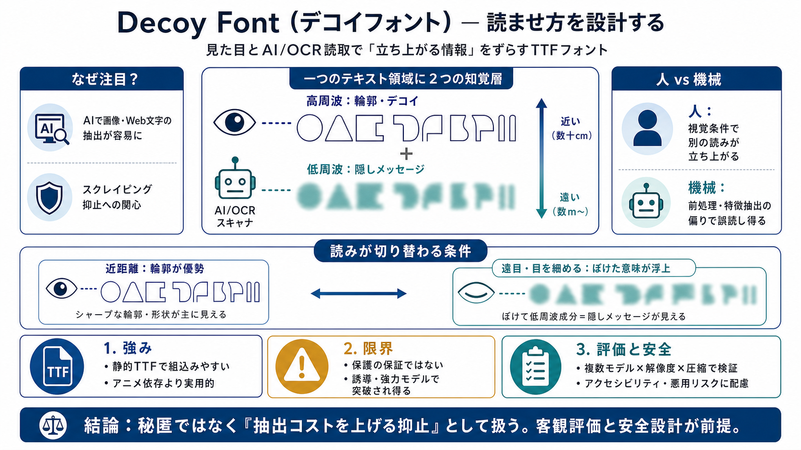

Decoy Font: A TTF font that hides what you type
# Decoy Font. A TTF font that hides what you're typing from AI. Decoy font is a font that prints a decoy for every lette…

“読ませ方”を設計する
Decoy Fontは、見た目と機械読取（AI・OCR）で“立ち上がる情報”をずらす目的のTTFフォントです。
なぜ今、注目?
画像・Web上のテキストはAIで抽出・要約・検索されやすくなり、「テキストの保護／スクレイピング抑止」への関心が高まりました。
二重の像
Decoy FontはHybrid imagesの発想に近く、同じ文字領域に“デコイ（見せかけ）”と“隠しメッセージ”を同居させます。
空間周波数で制御
設計ではspatial frequencies（空間周波数）を使い、前景には細い輪郭のような高周波成分、背景にはぼけた塊のような低周波成分を重ねます。
見る条件で切替
視点や距離、目を細めるなどの視覚条件によって、どちらの成分が優勢に解釈されるかが変わる、という主張です。
人 vs 機械
AI/OCRが画像を読む際に「近いピクセル情報（輪郭）が優先される」という仮説が提示され、人には読めても機械には読みづらい、という論理につながります。
TTFで使える
Ghost Fontのようにアニメーション依存の手法と比べ、Decoy Fontは静的TTFとして組み込めるため、試作〜運用までの障壁が下がります。
保証はない
提示文では“保証ではない”と明記され、強力なエージェントや適切なプロンプトによってデコードされ得る可能性があります。
効く条件が不明
どのモデル、どの解像度・圧縮・フォントサイズ・背景条件で、どれだけ効くかは提示文だけでは検証設計が不足しています。
目的は抑止寄り
実務では、暗号のような確実性ではなく、偶発的な抽出の抑止やデコード難度（コスト増）として捉えるのが妥当、という評価です。
設計は多面
有効性の研究的意義はある一方、アクセシビリティや悪用可能性を含むリスク評価・透明性が必要です。
結論
Decoy Fontは面白い挑戦で、研究・教育の素材にもなり得ますが、“保護の保証”として過信せず、客観評価（複数モデル×条件）とアクセシビリティ配慮を前提に扱うべきです。
# Decoy Font. A TTF font that hides what you're typing from AI. Decoy font is a font that prints a decoy for every lette…
This paper explores state-of-the-art techniques and advancements in OCR for handling noisy and distorted texts.
Few-shot Font Generation (FFG) aims to create a complete font from a limited number of references, offering significant …
by C Wang · 2023 · Cited by 122 — We collect 300 Chinese fonts to build a dataset (includ- ing printed and handwriting f…
No information is available for this page.